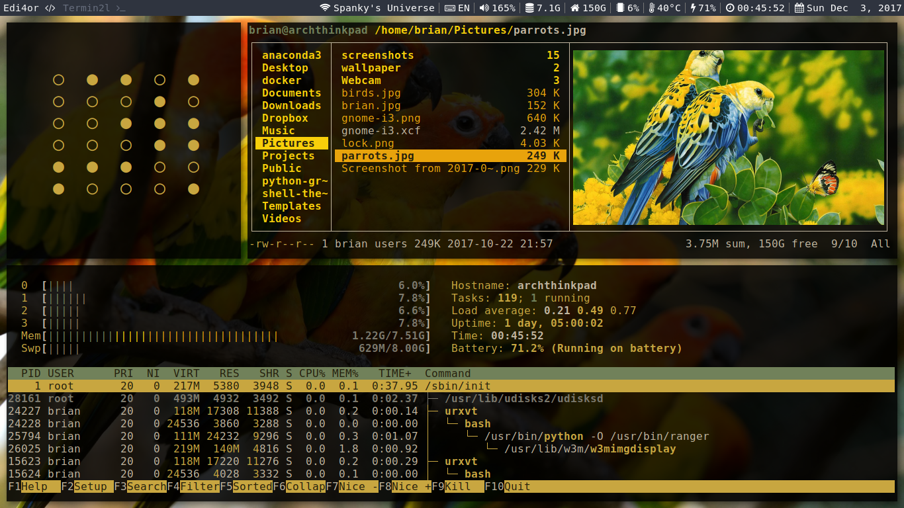
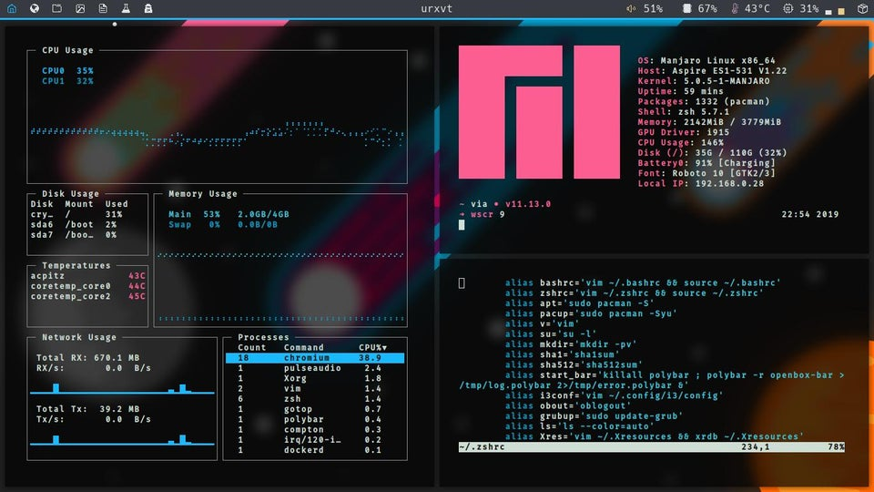
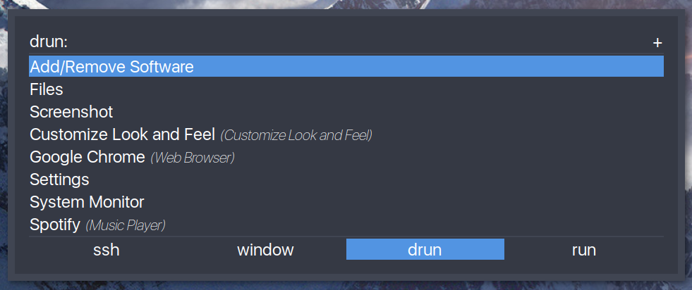
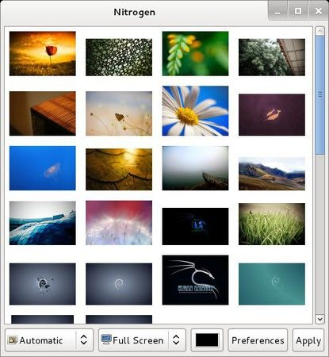
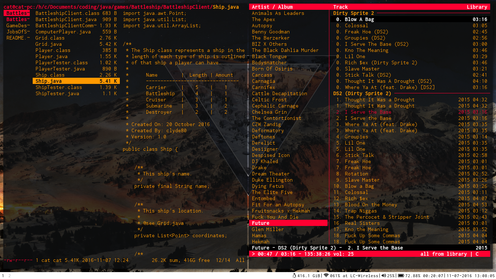

Guia Linux - Personalizar
Table of Contents

1 Zsh y Powerline
1.1 Instalación
sudo apt-get install zsh git # para instalar las fuentes sudo apt-get install fonts-powerline powerline
1.2 Activar Zsh desde Bash
# para cambiar de bash a zshell # quedando como shell por defecto chsh -s $(which zsh) # Observación: # Esta otra manera podría servir, aunque el comando "which" sería más efectivo # chsh -s /usr/bin/zsh
1.3 Configuración Zsh
1.3.1 Cambiar de theme
Podemos cambiar el estilo, y el diseño de la terminal cambiando el theme en el perfil de zsh en ~/.zshrc y cambiar el valor de la variable por el nombre de theme revisar en las página oficial la variedad de themes. El más conocido es agnoster
# Modificamos el perfil de zsh # - Cambiamos el valor de la variable ZSH_THEME por el theme que queramos nano ~/.zshrc # luego de guardar los cambios en el perfil de zsh # aplicamos los cambios con el siguiente comando source ~/.zshrc
1.3.2 Cambiar el prompt (símbolo del sistema)
Modificamos el archivo ~/.zshrc y agregamos la función promptcontext() que aparece debajo
# agregar la siguiente función en el archivo ~/.zshrc prompt_context() { if [[ "$USER" != "$DEFAULT_USER" || -n "$SSH_CLIENT" ]]; then #prompt_segment black default "%(!.%{%F{yellow}%}.)%n@%m" # este tiene user@hostname prompt_segment black default "%(!.%{%F{yellow}%}.)%n" # este tiene user fi }
1.4 Referencias
1.4.1 Referencias Oficiales
1.4.2 Referencias Web Extraoficiales
1.4.3 Referencias Youtube
- Referencia #1 - [Ver Vídeo](https://www.youtube.com/watch?v=ADytC9a2g2Y)
- Referencia #2 - [Ver Video](https://www.youtube.com/watch?v=4KBuPCeF9Gc)
2 Terminal RXVT Unicode
2.1 Conceptos
Existe una gran variedad de terminales, entre las más conocidas son:
- Rxvt
- Terminator
- Tilix
- Gnome
- Xterm

2.2 Instalación
Si queremos cambiar a una terminal más personalizada y sin limitaciones, podemos hacer uso de rxvt que a diferencia de la predeterminada gnome de ubuntu
sudo apt install rxvt-unicode
2.3 Configuración
En el archivo oculto `.Xresources` guardaremos las configuraciones que luego aplicaremos los cambios colocando en la terminal `xrdb .Xresources` suponiendo que estamos ubicados en el directorio `~/`
Ejecutamos las siguientes comandos en la terminal
# creamos el archivo de configuración touch ~/.Xresources # creamos directorio donde guardaremos plugins mkdir ~/.rxvt/ext
2.4 Configuración Personal
Les comparto la configuración que fui adaptando con lo que iba investigando, pueden personalizarlo a gusto.
!Para aplicar cambios ejecutar en la terminal la sig linea de comando !xrdb ~/.Xresources !Configuramos la ruta donde agregamos las extensiones URxvt.perl-lib: ~/.urxvt/ext/ !Configuramos la fuente !URxvt.font: xft:DejaVu Sans Mono:size=11 URxvt.font: xft:Meslo LG L DZ for Powerline:size=11 !la necesita theme agnoster de zshell !! URxvt Appearance URxvt.letterSpace: 0 URxvt.lineSpace: 0 URxvt.geometry: 92x24 URxvt.internalBorder: 24 URxvt.cursorBlink: true URxvt.cursorUnderline: false URxvt.saveline: 2048 URxvt.scrollBar: false URxvt.scrollBar_right: false URxvt.urgentOnBell: true URxvt.depth: 32 URxvt.iso14755: false !! Common Keybinds for Navigations URxvt.keysym.Shift-Up: command:\033]720;1\007 URxvt.keysym.Shift-Down: command:\033]721;1\007 URxvt.keysym.Control-Up: \033[1;5A URxvt.keysym.Control-Down: \033[1;5B URxvt.keysym.Control-Right: \033[1;5C URxvt.keysym.Control-Left: \033[1;5D !! Copy Paste & Other Extensions !URxvt.perl-ext-common: default,selection-to-clipboard,pasta,matcher,keyboard-select URxvt.perl-ext-common: default,clipboard,url-select,keyboard-select URxvt.copyCommand: xclip -i -selection clipboard URxvt.pasteCommand: xclip -o -selection clipboard URxvt.keysym.M-c: perl:clipboard:copy URxvt.keysym.M-v: perl:clipboard:paste URxvt.keysym.M-C-v: perl:clipboard:paste_escaped URxvt.keysym.M-Escape: perl:keyboard-select:activate URxvt.keysym.M-s: perl:keyboard-select:search URxvt.keysym.M-u: perl:url-select:select_next URxvt.urlLauncher: firefox URxvt.underlineURLs: true URxvt.urlButton: 1 !! Colorscheme !! Para cambiar a otros diseños podemos elegir en https://terminal.sexy/ ! special *.foreground: #93a1a1 *.background: #141c21 *.cursorColor: #afbfbf ! black *.color0: #263640 *.color8: #4a697d ! red *.color1: #d12f2c *.color9: #fa3935 ! green *.color2: #819400 *.color10: #a4bd00 ! yellow *.color3: #b08500 *.color11: #d9a400 ! blue *.color4: #2587cc *.color12: #2ca2f5 ! magenta *.color5: #696ebf *.color13: #8086e8 ! cyan *.color6: #289c93 *.color14: #33c5ba ! white *.color7: #bfbaac *.color15: #fdf6e3
2.5 Atajos Terminal RXVT
| Comando | Descripción |
|---|---|
| Shift+ArrowUp | Scroll hacia arriba |
| Shift+ArrowDown | Scroll hacia abajo |
| C+ArrowLeft | Desplazar el cursor palabra por palabra |
| C+ArrowRight | Desplazar el cursor palabra por palabra |
| M-w | Copia texto seleccionado hacia el portapapeles |
| C-y | Pega el texto del portapapeles |
Observaciones:
- Con M nos referimos a MetaKey, que es la tecla Alt
- Con C hacemos referencia a la tecla Control
- Los shortcuts de copiar y pegar, los adapte por costumbre de usar Emacs
2.6 Referencias
2.6.1 Referencias Web Extraoficiales
- Documentación #1 por ArchLinux [Ver Pagina](https://wiki.archlinux.org/index.php/Rxvt-unicode_(Espa%C3%B1ol))
- Documentación #2 por Gentoo [Ver Página](https://wiki.gentoo.org/wiki/Rxvt-unicode)
- Configuración #1 por Addy [Ver Pagina](https://addy-dclxvi.github.io/post/configuring-urxvt/)
- Pugins [Ver Página](https://github.com/muennich/urxvt-perls)
- Habilitar transparencia [Ver Pagina](https://wiki.archlinux.org/index.php/Rxvt-unicode/Tips_and_tricks#Transparency)
2.6.2 Referencias Youtube
- Configuración #2 [Ver Vídeo](https://www.youtube.com/watch?v=_kjbj-Ez1vU)
3 Windows Manager i3wm
3.1 Conceptos
Podemos usar el i3 que no se refiere al procesador, sino al nombre del programa que nos permite manejar las terminales de una manera más eficiente mediante atajos (shortcuts)
3.2 Instalación
| Paquete | Descripción |
|---|---|
| i3 | Gestiona ventanas |
| i3status | Representa la Barra de estado que muestra la hora, espacios de trabajo, … |
| i3lock | Cuando se bloquea la sesión |
| compton | Agrega efectos a las ventanas (Ej. transparencia entre transiciones) |
| nitrogen | Cambia el wallpaper del espacio de trabajo |
# al agregar el parámetro -y se instalan los paquetes de forma directa # nos evitamos que nos pregunte si queremos instalar con el si/no sudo apt-get install -y i3 i3status i3lock compton nitrogen
3.3 Configuración
- Debemos modificar el archivo de i3wm con `sudo nano ~/.config/i3/config`
- Agregamos a la configuración `bindsym $mod+Return exec rxvt` para abra la terminal rxvt unicode y presionamos el shortcut `Super+Shift+r` para reiniciar i3wm
- Modificamos la configuración de bash con `sudo nano ~./.bashrc/`
- Agregamos las siguientes lineas
# ejecuto neofetch neofetch --w3m $HOME/Pictures/Wallpapers/wallpaper-hacksign3.jpg # habilito la zshell zsh
Observación: Cada vez que se abra una terminal con `Super+Ret` se abrirá con la terminal rxvt unicode, con el programa neofetch y con la zshell habilitada
3.4 Atajos de i3
Hay ciertos atajos que nos facilitan desplazarnos entre las ventanas, espacios de trabajo, etc.. sin la necesidad de utilizar el mouse.
| Comando | Descripción |
|---|---|
| Super-RET | Abre una terminal |
| Super Shift e | Cerrar sesion de i3 |
| Super-d | Despliega un menu para ejecutar lineas de comando |
| Super Shift r | Reinicia el entorno, mantiene los espacios detrabajo |
| Super Shift c | Recarga archivos de configuración de i3 |
| SUper Shift Q | Cierra la ventana |
| Super-ArrowKey | Cambiar cursor a otra ventana |
| Super Shift ArrowKey | Mueve la ventana |
| Super-n | Cambia el espacio de trabajo (Siendo n un número) |
| Super v Super Ret | Las próximas ventanas se abren en vertical |
La combinación de comandos `Super+v Super+Ret`, quiere decir que luego de presionar `Super+v` presionamos `Super+Ret` y las proximas nuevas ventanas que se abran con `Super+Ret` se apilaran debajo de la que estemos posicionados.
3.5 Modo Resize
Para cambiar el tamaño de las ventanas
- Super+r Activa el modo Resize
- ArrowKey (para ajustar el tamaño)
- Ret (para aplicar el cambio)
3.6 Modo Widescreen
Para agrupar varias pestañas que estan una debajo de la otra en una sola con tantas pestañas como ventanas tuviera debajo
| Comando | Descripción |
|---|---|
| Super-w | Superpone la ventana a las que tenga arriba y debajo |
| Super-ArrowKey | Desplazarse entre las pestañas |
| Super+e | Desactiva el modo Widescreen |
3.7 Observaciones de Teclas
- Super es la tecla que asignamos al configurar i3 (suele ser Windows ó Alt).
- Ret se suele referir a la tecla Enter
- ArrowKey es cualquiera de las flechas del teclado
3.8 Referencias
3.8.1 Referencias Web Oficiales
- https://i3wm.org/docs/userguide.html
- Documentación Oficial #1 [Ver Página](https://i3wm.org/)
- Documentación Oficial #2 [Ver Página](https://i3wm.org/docs/userguide.html#_configuring_i3bar)
3.8.2 Referencias Web Extraoficiales
- Entendiendo i3 [Ver Pagina](https://github.com/Airblader/i3)
- https://www.maketecheasier.com/install-use-i3-window-manager-ubuntu/
- https://www.dagorret.com.ar/instalar-utilizar-i3-window-manager-ubuntu/
- https://opensource.com/article/18/8/getting-started-i3-window-manager
- https://ericren.me/posts/2019-01-27-minimal-ubuntu-tiling-wm-setup/
3.8.3 Referencias Youtube
- Opcion #1 [Ver Video](https://www.youtube.com/watch?v=8-S0cWnLBKg)
- Opcion #2 [Ver Vídeo](https://www.youtube.com/watch?v=CREit-6_IgI&t=928s)
4 Usando w3m y w3m-img
Con el programa `w3m` podemos navegar via internet mediante la terminal de comandos, mientras que con `w3m-img` nos permite visualizar imagenes desde la terminal.
5 Rofi

5.1 Conceptos
Es un lanzador de aplicaciones (launchers) utilizados en los gestores de ventanas (WMs) como iw3m
Este programa nos despliega un menu (parecido al dmenu) y facilita la ejecución de programas mediante lineas de comando, evitando tener que abrir una terminal.
5.2 Instalación
# instalamos el paquete sudo apt-get install -y rofi # para probar que se instaló con éxito, deberia desplegar un menú rofi -show run
5.3 Configuración - Cambiar Theme
Suponiendo que ya tenemos instalado y configurado con i3
- Desplegamos el menú de lineas de comandos con `Super+d` (Por default abre dmenu, pero en mi configuración ejecuta Rofi)
- Escribimos `rofi-theme-selector` y luego seleccionamos el theme que querramos (Monokai, Solarized, etc..)
- Para ver la lista de themes instalados escribimos `ls /usr/share/rofi/themes`
- Modificamos el archivo de configuración de i3wm
sudo nano ~/.config/i3/config
5 . Agregamos la siguiente linea en el archivo del paso anterior
# Una descripción del comando utilizado # - $mod+d: es el atajo de teclas # - exec rofi: ejecutamos el programa Rofi # # Detallamos los parámetros del comando # - show run: despliega el menu de Rofi # - opacity "80": le agrega transparencia a la ventana del menu # - columns 2: separa la lista de comandos en 2 columnas # - theme Monokai: le asigna el theme Monokai que instalamos previamente bindsym $mod+d exec rofi -show run -opacity "80" -columns 2 -theme Monokai
6 . Reiniciamos el i3wm con `Mod+Shift+R` Por último podemos probar si los cambios surtieron efectos ejecutando `Mod+d`
5.4 Referencias Youtube
- Referencia #1 [Ver Video](https://www.youtube.com/watch?v=wcMyH3o5FMg)
- Referencia #2 [Ver Video](https://www.youtube.com/watch?v=Sa9SWMvAMIU)
6 Nitrogen
6.1 Conceptos
Nos da la opción de elegir y agregar fondos de pantalla al sistema

6.2 Instalación
sudo apt-get install -y nitrogen
6.3 Configuración
Para seleccionar los wallpaper es necesario indicar en donde estan localizados, por tanto en la terminal escribimos lo siguiente
# luego de ejecutar la siguiente linea # nos aparecerá una interfáz gráfica para elegir el wallpaper nitrogen $HOME/Pictures/Wallpapers
Luego aparecerá una pantalla con las imágenes guardadas en esa ruta, elegimos la imagen preferida aplicamos los cambios presionando en Apply
7 Compton
7.1 Conceptos
Es un compositor de ventanas, que agrega efectos como animación de desvanecimiento cuando nos movemos entre ventanas.

7.2 Instalación
Ejecutamos la siguiente linea de comando en la terminal
sudo apt-get install -y compton
7.3 Configuración
Suponiendo que tenemos instalado y configurado i3wm, agregamos en el archivo de configuración la siguiente linea
# este comando se ejecutará cada vez que inicie i3wm # Observación: recorda que hay que agregarlo en la configuración de iw3m exec_always compton -f
7.4 Referencias Youtube
- Compton [Ver Vídeo](https://www.youtube.com/watch?v=5GpyaSEe0VY)
8 Polybar
8.1 Conceptos
El Polybar es para crear un statusbar (barra de estado) que muestra la información del sistema con una interfáz gráfica
8.2 Referencias
8.2.1 Referencias Web Oficiales
8.2.2 Referencias Youtube
- Polybar [Ver Vídeo](https://www.youtube.com/watch?v=7RNgpvBMua0)
8.2.3 Referencias Web Extraoficiales
9 i3Blocks
9.1 Conceptos
Muestra la información de la barra de estado en formato json, y nos facilita decirle al i3wm que datos mostrar.
9.2 Instalación
Ejecutamos la siguiente linea de comando en la terminal
apt-get install -y i3blocks
9.3 Configuración
- Copiamos la configuración al directorio de i3wm `cp etc/i3blocks.conf ~.config/i3/`
- Modificamos en `~/.config/i3/i3blocks.conf` lo que queremos que aparezca en la barra de estado
- Reiniciamos el i3wm con `Super+Shift+R`
- Modificamos la configuración de i3wm con `sudo nano ~/.config/i3/config` y buscamos la linea que diga bar
bar{ # para modificar la barra de estado status_command i3blocks ~/.config/i3/i3blocks.conf # con esto se posiciona arriba de la pantalla position top }
10 Ranger File Manager
10.1 Conceptos
Para navegar de forma didáctica por los directorios mediante la terminal, además del manejo de archivos (Copiar, mover, borrar, etc..)
10.2 Instalación
En la terminal solo ejecutamos la siguiente linea de codigo
# para instalar en ubuntu sudo apt-get install -y ranger
Observación: Para iniciarlo ejecutamos desde la terminal con `ranger`
10.3 Atajos
| Atajo | Descripción |
|---|---|
| Shift+q | Salir de la terminal |
10.4 Configuración
- Modificamos el archivo de configuración con `sudo nano ~/.config/ranger/rc.conf`
- Buscar las lineas que dejamos comentadas con # y cambiar por la que aparece debajo
# set preview_images false set preview_images true # set draw_borders false set draw_borders true set preview_images_method w3m
- Nos aseguramos de tener instalado w3m ejecutando `sudo apt-get install w3m -y`
- Aplicamos los cambios de la configuración `source ~/.config/ranger/rc.conf`
10.5 Referencias
10.5.1 Referencias Web Oficiales
-Documentacion Oficial [Ver Pagina](https://github.com/ranger/ranger) -Wiki, por ArchLinux [Ver Pagina](https://wiki.archlinux.org/index.php/Ranger)
10.5.2 Referencias Web Extraoficiales
-Referencia 1, por Vitux [Ver Pagina](https://vitux.com/how-to-install-ranger-terminal-file-manager-on-linux/) -Referencia 2, por Vultr [Ver Pagina](https://www.vultr.com/docs/how-to-install-ranger-terminal-file-manager-on-linux)
11 Neofetch
11.1 Conceptos
Para ver información del sistema operativo
11.2 Instalación
sudo add-apt-repository ppa:dawidd0811/neofetch
11.3 Configuración
- Modificamos el archivo de configuración de bash con `sudo nano ~/.bashrc`
- Agregamos la siguiente configuración
# Cada vez que se abra la terminal aparecerá la información del sistema # y además la imagen que aparece en esa ruta neofetch --w3m $HOME/Pictures/Wallpapers/wallpaper-hacksign3.jpg
Observación: Se debe tener cuidado al modificar el archivo `.bashrc`
11.4 Referencias Web Extraoficiales
- Referencia #1 - DylanRaps [Ver Página](https://github.com/dylanaraps/neofetch/wiki/Image-Backends)
- Referencia #2 - DesdeLinux [Ver Página](https://blog.desdelinux.net/neofetch-obten-informacion-de-tu-equipo-y-sistema-en-la-terminal/)
- Referencia #3 - OsTechnix [Ver Página](https://www.ostechnix.com/neofetch-display-linux-systems-information/)
12 Dar color a la Terminal
12.1 Conceptos
Con la ayuda de la página Gogh podemos darle color a la terminal
Para más información sugerimos revisar las referencias
12.2 Referencias
13 Font Manager
13.1 Conceptos
Con el Font manager podemos elegir entre varias fuentes para cambiar la tipografía
Para más información sugerimos revisar las referencias Además agregamos algunas fuentes que se suelen recomendar para programar
13.2 Referencias Web Extraoficiales
- [Ir a Página](https://itsfoss.com/install-fonts-ubuntu/#targetText=To%20install%20several%20fonts%20at,show%20hidden%20files%20in%20Ubuntu.)
- Fuentes por Webos [Ver Página](https://wesbos.com/programming-fonts/)
- Referencia #1 Hivellogic [Ver Página](http://hivelogic.com/articles/top-10-programming-fonts/)
- Referencia #2 Narga [Ver Página](https://www.narga.net/top-best-programing-fonts/)
- Referencia #3 Slant [Ver Página](https://www.slant.co/topics/7014/~fonts-to-use-in-a-terminal-emulator)
14 Configuraciones de otros usuarios
- Referencia #1 - Gerardbm [Ver Página](https://github.com/gerardbm/dotfiles)
- Referencia #2 - HackerNoon [Ver Página](https://hackernoon.com/how-to-trick-out-terminal-287c0e93fce0)
- Referencia #3 - Reddit [Ver Página](https://www.reddit.com/r/unixporn/)
- Referencia #4 - Reddit [Ver Página](https://www.reddit.com/r/unixporn/comments/baz6j0/bspwm_rxvtunicode_redgreenblueshift/
- Referencia #5 - Manjaro [Ver Página](https://forum.manjaro.org/t/noteworthy-november-2016-screenshots/11997/7)
- Referencia #6 - BrianCaffey [Ver Página](https://briancaffey.github.io/2017/10/17/moving-from-gnome-to-i3-on-arch-linux.html)
- https://github.com/notthebee/dotfiles
- https://github.com/bookercodes/dotfiles/tree/arch